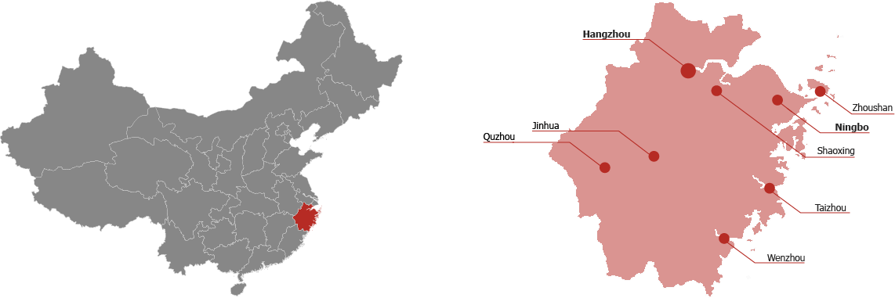

Zhejiang
Le Guangdong est la province la plus peuplée et la plus riche de la Chine, située dans le sud du pays, avec Canton comme chef-lieu, et est un centre majeur d’économie, de culture et de politique, abritant des villes dynamiques comme Shenzhen et étant le cœur de la culture cantonaise
